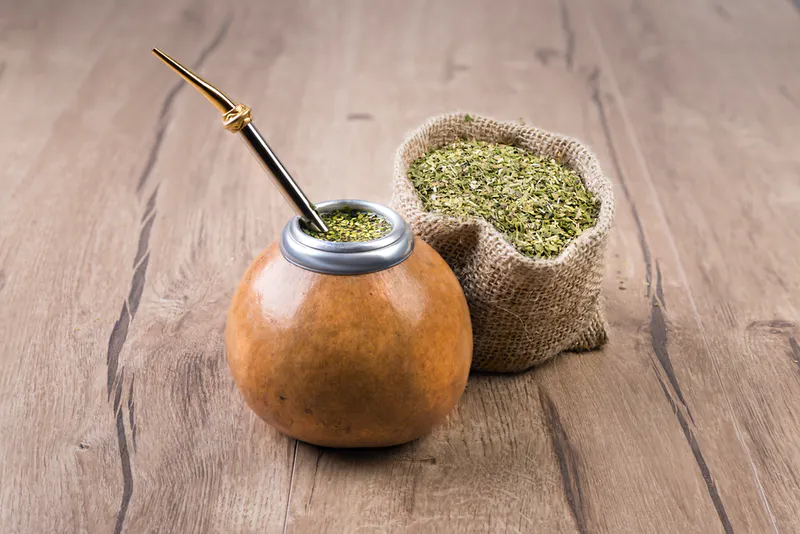
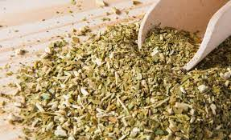

¿Qué es el mate?
El mate en la Argentina es el recipiente donde se toma la infusión. El más utilizado es el “porongo” o mate de calabaza, fruto de una planta. El origen de la palabra “mate” deriva del Quechua “Mati”, que significa calabaza. Lagenaria vulgaris es la familia de calabazas autóctonas de la zona yerbatera, además de tomar mate, los guaraníes las utilizaban para transportar agua durante sus largas caminatas por la selva y también para almacenar granos. La cosecha se realiza en forma manual y comienza en abril o mayo y se extiende hasta septiembre. Después de la cosecha, el árbol se regenera y produce más hojas (es perenne).
La historia de la yerba mate
Caá en lengua guaraní significa yerba, pero también significa planta y selva. Para el guaraní, el árbol de la yerba mate es el árbol por excelencia, un regalo de los Dioses. La yerba mate es un árbol nativo de la Selva Paranaense. En estado silvestre, alcanza una altura de entre 12 y 16 metros. Existen yerbales de hasta 100 años en algunas reducciones jesuíticas. Para facilitar la cosecha, las plantas son podadas hasta 2 veces al año a una altura de 2 metros en promedio. La Yerba Mate Argentina se produce y cultiva en Misiones y nordeste de Corrientes. Argentina es el principal productor y exportador mundial de Yerba Mate. Los suelos rojos, con alto contenido de hierros, y el clima subtropical sin estación seca, son ideales para el cultivo de la Yerba Mate.